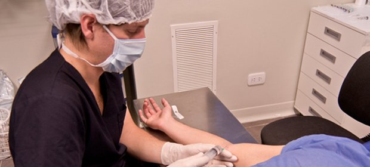

Sin internación
Operamos de forma ambulatoria: el paciente vuelve a su casa el mismo día.
Cuarenta años dedicados a la mano y el miembro superior, en Mendoza.
Nuestra historia
Clínica de Mano empezó a atender en 1986 y fue uno de los primeros centros de la Argentina dedicados a las enfermedades de la mano y el miembro superior.
Hoy diagnosticamos y tratamos afecciones de la mano, la muñeca, el codo y el hombro, y recibimos pacientes de toda la región de Cuyo.
La clínica abre en Mendoza, dedicada desde el inicio a la mano y el miembro superior.
El 14 de enero nos mudamos a Garibaldi 394, en la Ciudad de Mendoza.
Cirugía, tratamiento del dolor y rehabilitación en un mismo lugar.
Cómo trabajamos
Elegimos la técnica según cada caso, después de la consulta y los estudios.
Operamos de forma ambulatoria: el paciente vuelve a su casa el mismo día.
Procedimientos con incisiones pequeñas o por artroscopía, cuando el caso lo permite.
Reparación de vasos y nervios de pequeño calibre con técnica microquirúrgica.

Dolor y rehabilitación
La atención se completa con el departamento de tratamiento del dolor y rehabilitación especializada.
Así, la recuperación después de una lesión o de una cirugía la acompaña el mismo equipo que hizo el diagnóstico.
Ver dolor y rehabilitaciónAtendemos de lunes a viernes, de 9 a 13 y de 15 a 18 h, en Garibaldi 394.